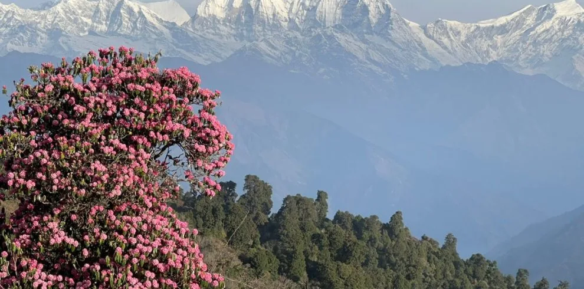
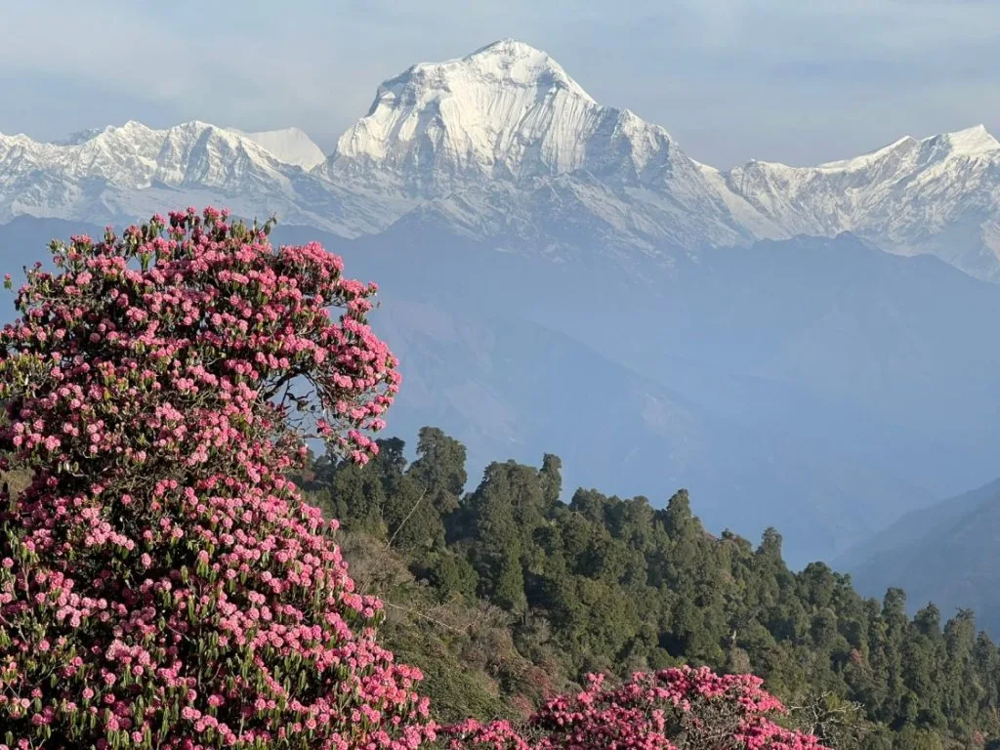
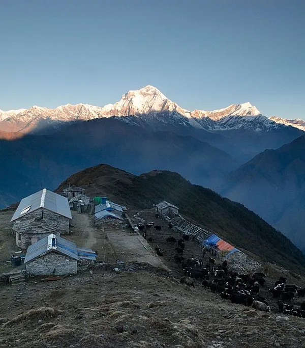
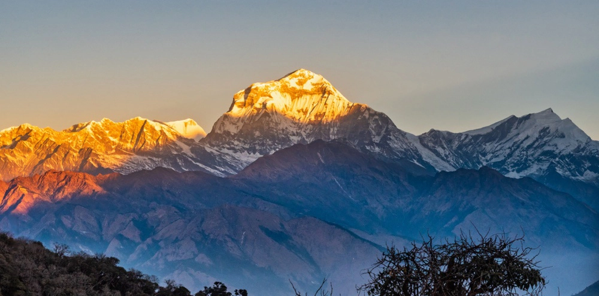
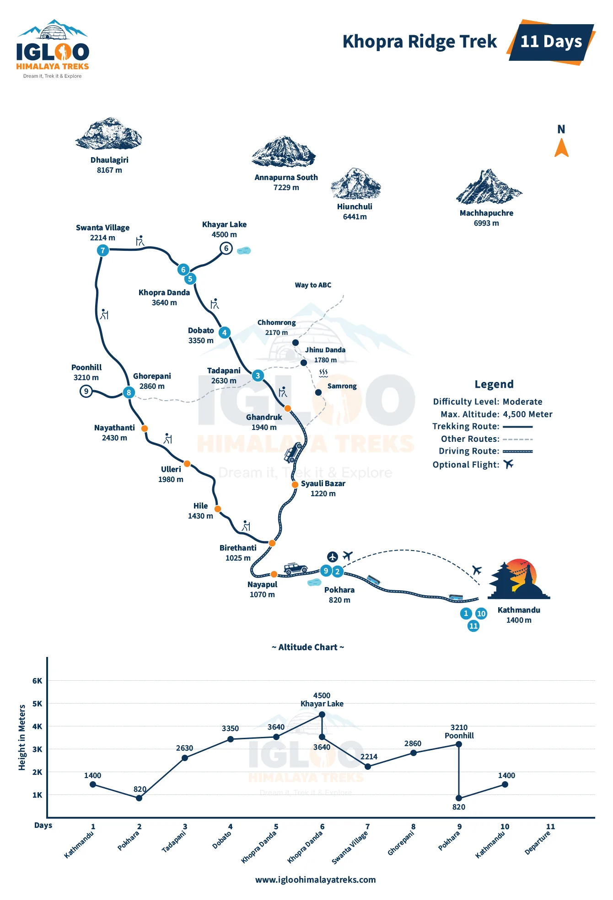
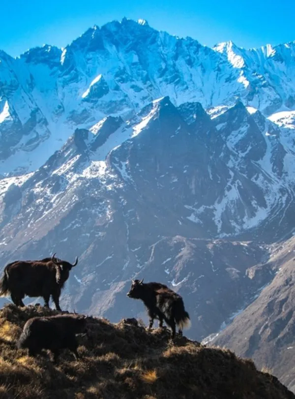
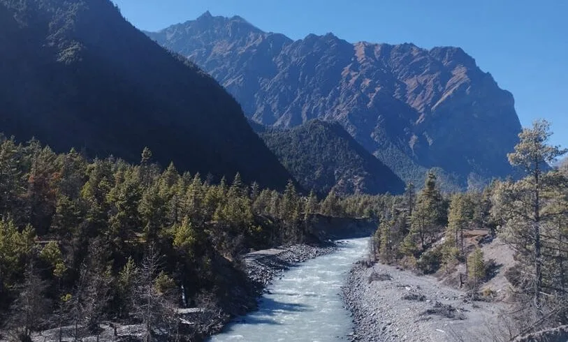
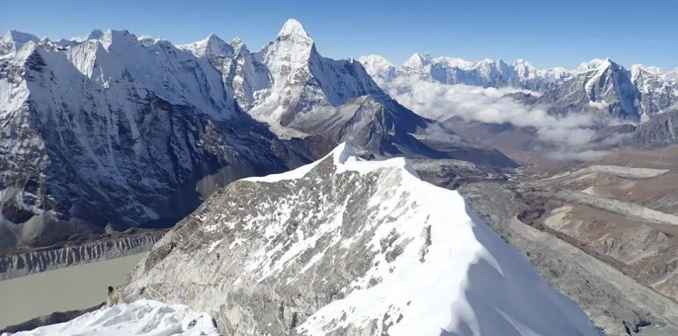

What Is the Khopra Ridge Trek? The Quiet Side of Annapurna
The Khopra Ridge Trek (Khopra Danda) climbs a high, open ridge on the western flank of the Annapurna massif. It branches from the classic Ghorepani Poon Hill route, leaving behind the busy stone staircases and bakery lodges for a remote alpine crest where trekkers are few and the mountains feel enormous.
At the ridge itself (3,660m) you stand facing the immense, avalanche-draped south face of Annapurna South (7,219m), with Hiunchuli (6,441m) and Machapuchare (6,993m) to the east and the vast Dhaulagiri range to the west. The sense of scale and solitude rivals far longer treks.
Why Khopra Stands Out: Most lodges here are owned and run by local community groups. Profits fund village schools, health posts, and trail upkeep, so every night you stay directly supports the mountain communities you walk through.
Geography & Location: Where Khopra Sits in the Annapurna Region
Khopra Danda lies in Nepal's Myagdi and Kaski districts inside the Annapurna Conservation Area. The ridge runs roughly north from Swanta and Chistibung toward the base of Annapurna South, forming a natural balcony above the Modi Khola and Kali Gandaki drainages.
Trekkers typically reach it from the Ghorepani and Tadapani side, hiking up through oak and rhododendron forest to Chistibung (2,500m) and Swanta (2,200m), before the final climb to Khopra Ridge. This position places the trail between the heavily trekked Poon Hill circuit and the remote Dhaulagiri region.

Magar Villages & Community Tourism: Who Runs Khopra
The lower approaches to Khopra pass through Magar and Gurung farming villages such as Swanta, Chistibung, and Tadapani. Life here follows the seasons: terraced millet and maize, buffalo herds, and household shrines tucked beside stone paths. Walking through these settlements gives Khopra a cultural depth that purely high-altitude routes lack.
The ridge lodges themselves operate on a community model. Local committees manage bookings, set fair prices, and reinvest profits into schools, health posts, and trail maintenance. This is a major reason many guides recommend Khopra for travellers who want their money to stay in the mountains.
- Be a good guest: Dress modestly in villages, ask before photographing people, and avoid plastic bottles.
- Stay where you eat: Eating at your lodge is how owners make a living at this altitude.
- Learn a few words: A simple "Namaste" and "Dhanyabad" (thank you) go a long way.
Views & Scenery: A Front-Row Seat to Annapurna South
Khopra's headline attraction is proximity. From the ridge and the nearby Khopra viewpoint, Annapurna South and Hiunchuli fill the northern sky so completely that cameras struggle to frame them. At sunrise the upper faces glow gold and rose; by afternoon the cloud rolls in below you, leaving the peaks floating above a white sea.
- Annapurna South (7,219m): A towering, glaciated wall directly ahead.
- Hiunchuli (6,441m): A sharp pyramid flanking Annapurna South.
- Dhaulagiri I (8,167m) and Tukuche: The great western giants across the Kali Gandaki.
- Nilgiri and Machapuchare: Clear views down the valley on good mornings.

Classic 8-Day Khopra Ridge Itinerary
The standard route links Khopra with the Poon Hill region for a rewarding loop. Here is a well-paced 8-day plan:
| Day | Route | Walking Time | Sleeping Altitude | Highlight |
|---|---|---|---|---|
| Day 1 | Drive Pokhara to Ulleri/Tikhedhunga, trek to Ulleri | 4 - 5 hrs | 1,960 m | Ulleri stone staircase, village views |
| Day 2 | Ulleri to Ghorepani | 5 - 6 hrs | 2,860 m | Rhododendron forest |
| Day 3 | Poon Hill sunrise, trek to Chistibung | 6 - 7 hrs | 2,500 m | Dawn panorama then forest ridge |
| Day 4 | Chistibung to Khopra Ridge | 5 - 6 hrs | 3,660 m | Arrival below Annapurna South |
| Day 5 | Rest day or day trip toward Khayer Lake viewpoint | 3 - 6 hrs | 3,660 m | Acclimatization and exploration |
| Day 6 | Khopra to Swanta | 5 - 6 hrs | 2,200 m | Descent through Magar villages |
| Day 7 | Swanta to Ghandruk or Nayapul | 5 - 6 hrs | 1,940 m | Gurung heritage village |
| Day 8 | Drive back to Pokhara | 2 - 3 hrs drive | 820 m | Lakeside celebration |

The Khayer Lake Extension: Chasing a Sacred Alpine Lake at 4,660m
For hikers with extra time and energy, a side trip from Khopra to Khayer Lake (4,660m) is the trek's high point. This sacred glacial lake sits in a barren, windswept basin beneath the Annapurna wall, and is a place of pilgrimage for local communities who visit during the August full-moon festival.
The round trip from Khopra takes 6 to 8 hours and gains roughly 1,000 vertical metres, so it is demanding and best attempted on a dedicated day after acclimatizing at the ridge. Conditions can be harsh: strong winds, cold, and sometimes snow even in autumn.
Altitude Caution: Khayer Lake is higher than Annapurna Base Camp. Only attempt it if you feel well at Khopra, start before sunrise, carry warm layers, and be ready to turn back if cloud, wind, or symptoms worsen.

Altitude Profile & Acclimatization
Khopra Ridge reaches 3,660m, which is moderate high altitude. Because you sleep at Ghorepani (2,860m) and Chistibung (2,500m) before climbing, most trekkers adapt comfortably. Spending a full rest day at Khopra is strongly recommended, particularly if you plan the Khayer Lake extension.
- Drink 3 to 4 litres of warm fluid daily.
- Climb slowly and avoid alcohol at altitude.
- Use the rest day for short acclimatization walks, then sleep at the same elevation.
- Descend if headache, nausea, or dizziness worsens.
How Difficult Is Khopra? Terrain and Fitness Needs
Khopra Ridge is graded Moderate to Strenuous. Daily walking is 5 to 7 hours over forest tracks, stone steps, and open ridge paths. The climb from Chistibung to the ridge is sustained, and the Khayer Lake day is genuinely tough. Good cardiovascular fitness and some prior hiking experience are advised.
The upside is that the trail is quiet and the terrain, while steep, is non-technical. Trekking poles are strongly recommended for the long forest descents.

Community Lodges, Food & Comfort on the Ridge
Lodges along the Khopra route are mostly community-managed. Rooms are simple twin-share spaces with foam mattresses and blankets, and electricity and hot water may be limited at the ridge itself. Dining rooms are warm, communal, and serve hearty dal bhat, noodles, soups, and porridge.
| Stop | Altitude | Lodge Style | Hot Water | Connectivity |
|---|---|---|---|---|
| Ghorepani | 2,860 m | Established lodges, bakeries | Solar and gas showers | Good 4G |
| Chistibung | 2,500 m | Simple family lodges | Limited / bucket | Patchy |
| Khopra Ridge | 3,660 m | Community lodge, basic | Bucket hot water | Weak or none |
| Swanta | 2,200 m | Village homestays | Available | Moderate |

Best Time to Trek Khopra: Season-by-Season
Khopra's exposed ridge is sensitive to weather, so timing matters:
- Autumn (October to November): The best window. Clear skies, stable weather, excellent views.
- Spring (March to May): Warm and green, with rhododendron blooms in the lower forests. Afternoon cloud is common.
- Winter (December to February): Cold, snowy, and challenging; lodges at the ridge may close.
- Monsoon (June to August): Not recommended, though Khayer Lake hosts a pilgrimage festival in August.

Permits & Regulations for Khopra
Khopra lies within the Annapurna Conservation Area, so the standard permits apply:
- ACAP Permit: NPR 3,000 (~USD $23) for foreign nationals.
- TIMS Card: NPR 2,000 (~USD $15).
- Guide Requirement: Foreign trekkers must hike with a licensed guide arranged through a registered agency, which is especially valuable on remote ridge trails.
Some community lodges also collect small camping or lodge-support fees.
Khopra Ridge Trek Cost Breakdown
A guided 8-day Khopra trek is moderately priced. A realistic breakdown:
| Expense | Estimated Cost (USD) | Notes |
|---|---|---|
| Permits (ACAP + TIMS) | ~$38 | Fixed government fees |
| Private Transport | ~$80 - $110 | Pokhara to trailhead and return |
| Lodging & Meals (8 days) | ~$200 - $280 | Community lodges and teahouses |
| Licensed Guide | ~$210 - $270 | Daily wage, food, insurance included |
| Porter (optional) | ~$170 - $210 | Carries up to 18 to 20 kg |
| Total Estimate (guided) | ~$530 - $700 | Excluding porter |
Packing for Khopra: Layers, Poles & Cold Nights
Nights at the ridge drop close to or below freezing outside summer, and lodges are basic. Pack a -10°C down sleeping bag, a warm down jacket, wind and waterproof shells, merino base layers, sturdy boots, two trekking poles, a headlamp, and a water purification system. If you plan Khayer Lake, add microspikes in colder months and glacier sunglasses.

Is the Khopra Ridge Trek Right for You? Verdict and Rules
Khopra is for trekkers who want big Annapurna views without the crowds, who accept basic lodges, and who enjoy a sense of remote adventure. It is more demanding than Poon Hill, quieter than Annapurna Base Camp, and deeply rewarding.
- Plan a rest day at Khopra: It improves acclimatization and flexibility for weather.
- Start early: Mornings are clearest and calmest.
- Carry cash: There are no ATMs on the route.
- Respect the lodges: Community income depends on respectful, low-impact travel.
- Trek with a licensed local guide: Igloo Himalaya Treks arranges permits, lodging, and safety for Khopra and Khayer Lake.

Ready to Experience the Himalayas?
Whether you are preparing for high-altitude trekking, cultural circuits, or alpine summit expeditions, start planning a bespoke journey tailored to your fitness, travel season, and style.